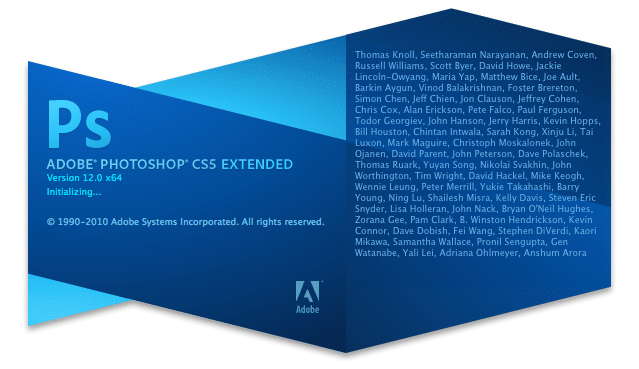

Специально для тех кому не хочется возится с ключами и кряками к официальной версии либо к той версии photoshop cs5 у которой триальный пробный период. Не забывайте что в этих версиях может быть много чего вырезано плагины-дополнения от сюда и меньший вес, если вы профессионал и вам нужен полностью укомплектованный редактор фотошоп то вам придется Скачать Adobe photoshop cs5 оф версию перейдя по ссылке. Данные версии с вшитым ключом который не потребует активацию в процессе работы, имеется несколько версии сборок активированной программы какую качать решать вам функции у обеих версий одинаковы просто разные сборки и сборщики.

Adobe Photoshop CS5 — приложение для работы с растровыми изображениями, поддерживающее интеграцию со многими программами для создания компьютерной графики. Эта версия содержит в себе не только широкий выбор инструментов для работы с пиксельными изображениями, но и мощные встроенные средства для создания трёхмерной анимации, HDR-изображений, многослойных изображений и панорам на профессиональном уровне. Программа позволяет изменять огромное количество разнообразных параметров изображения, доведя его до идеала. Adobe Photoshop CS5 широко применяется во всех сферах деятельности человека, где присутствует необходимость работать с графическими файлами: полиграфия, дизайн, фотомонтаж и т.д.
Совет: Если вы долго работаете и используете фотошоп azbukasofta то не в коем случае не заходите в верхней панели в справка->Информация о системе. Открывать сам список в меню справка можно но не нажимать на информацию о системе, последствия таковы что прога вылетает, то-есть завершает работу без сохранения каких либо данных. Так что если вы делаете серьезную работу то знайте об этом, чтоб ваши труды не прошли даром.
Внимание! Установка от azbukasofta тихая то-есть когда вы скачаете файл и сделаете двойной щелчок по нему не чего не произойдет типа окна выбора языка или путь установки. В процессе тихой установки может появится командная строка не на долго, ее не закрывайте установка не долгая, окончание установки можно понять появившимся значком программы на рабочем столе.
Скачать Adobe Photoshop cs5 с вшитым ключом на русском
|
64 мб |
135 мб |
|
182 мб |
|
Частые вопросы:
После установки при запуске сборку от azbukasofta выскакивает ошибка №6 (Error:6)
Попробуйте запустить от имени администратора или в режиме совместимости. Для этого на значке программы нажмите правой кнопкой и выберите пункт «запуск от имени администратора«
Как сделать на русский если при первом запуске EN

Кайф, добра тебе админ. скачка быстра и установка шустрая.
Работает прекрасно,
спасибо, доволен)))
У меня не высвечуется табличка что скачуется
какая табличка?
Доступно, просто, конструктивно, оперативно.
Огромное спасибо!!!
Без всяких проблем установил Cs5 от AlexAGF. Спасибо огромное. Очень помогли.
Скачала «Фотошоп CS5 активированный Portable». Работает отлично! И ещё классно, что есть подсказки. Сохранила ярлык на Рабочем столе, как указано в тексте. И открыла от имени администратора, потому, что вылазила ошибка!
Ребят, help. Какой фш отсюда не скачаю, все после запуска установки выкидывают рамку загрузки с надписью «подождите» и всё. И висит такая фигня который час уже. Тип установка идёт, но ничего не происходит.
Попробуйте заново запустить скачанный файл через некоторое время 15-20 мин
Ппц крутая
Поставил от azbukasofta всё отлично.
Спасибо,молодцы !!!
спасибо огромное сайт круть 1000000000 звёзд вам долго искал как не вирус так хрень какаято а тут всё как на лодоне!
super
100%-классссс
Наконец-то хоть тут все получилось установить.
Чтоза ашипки ужас
пишет что ошибка совместимости, хотя вроде поставил совместимость с win xp 3ий пакет обновлений. что не так?
выдает ошибку при установке на правах администратора.. мол нет прав и бла-бла.. что делать?
на минимум контроль учетных записей попробуйте
Всё ребят спасибо вам огромное!Всё работает на ура!
Раскрыть архив комментариев (вопросы-ответы)
Тут такая ситуация, скачал фш azbukasofta на русский язык поставил вроде всё норм, захотел открыть изображение, выбрал но он просто не хочет его открывать. Не знаю что делать, может быть все дело в разрешении изображения?
Ответьте пожалуйста!!!
попробуйте просто в открытый фотошоп перетащить нужное изображение, попробуйте другие открыть если открываются то дело в картинке, бывает такое но даже если так то должна быть информация о ошибке-несовместимости.
Хах, я решил проблему, оказывается нужно было просто перезапустить компьютер))
Извините что потревожил)
какой номер серийный?
не нужны номера все активируется в процессе
а есть разница между Фотошоп CS5 акФотошоп CS5 активированный от azbukasoft и aтивированный Portable
все скачалось и все работает)) спасибо большое!!!!!
Странно, но после 2-ого раза не открывается. (стоит табличка и 2 кнопки ОК и отмена, нажимаю на одну из них — закрывается)
крутяк, все просто
Спасибо большое, все установила перевела на русский язык. Все очень понятно объяснено. Буду теперь осваивать эту программу.
очень крута
крута
Да норм
Подскажите какой скачать?У меня xp
нет русского языка
Есть
Отличный фотошоп ))
английская версия, как русский сделать?
на картинке нарисовано по шагам как делать русский.
не получается открыть на mac
помогите,пожалуйста!!!
Почему когда я нажимаю создать, выбираю размер, нажимаю ок, и у меня фотография открывается в отдельном окне. Что делать?
Помогите пожалуйста!!!
просто переташи
Спасибо, Вам) пришлось немного повозиться, и всё готово) осталось научиться в нём работать)
Лалалал
Я вот еще видел фотошоп CC. С5 и СС они отличаются? может и СС скачать думаю.
Если у вас win xp то CC версия не пойдет, отличия не заметны пользователям не профессионалам, а так там есть разница но не большая погуглите на счет этого есть инфа.
Какой источник выбирать нужно?
любой там же написано!
и какой лучше качать Портабл или Азбука софта?
думаю что от azbukasofta
Спасибо!
Ни получается переключится на русский язык, делаю так как на скрине показано, и нажимаю ок… что делать?
нажали «ок» и перезапустите фотошоп
а все спасибо все понял, просто нужно сначало сделать все как на скрине а затем перезапустить фотошоп, и он будет на русском языке.))
Я рад за вас, если сумел вам помочь.
установила, но не могу найти на компьютере..куда устанавливается программа?
Вы сами путь можете указать перед скачиванием
Не идеально но работает, спасибо.
Благодарю вас за работу!!!) у меня все отлично пошло, давненько о ней мечтала)
У меня неполучается какаято хрень MediaGet это так и должно быть?
все норм, что не получается все скачивается?
salalm
Думал что вирус, скачал, установил, открыл и всё работает без обмана молодцы 5 звёзд + качайте Portable
У меня на семерке (32бит) не идет, по крайней мере запускается, но все отображается неправильно и при нажатии на некоторые опции программа вылетает и еще не удается поменять язык, однако на ноутбуке, тоже семерке (но 64бит) все работает идеально! Видимо какая-то несовместимость, все равно спасибо за программу!
Ошибка 6. Запускаю от имени админа.
Спасибо, всё супер
запустила от имени админа. выдал ошибку 6. как исправить?
скачала CS5 активированный от azbukasofta,а он не открывается даже, пишет файл не является архивом.
Что делать?
видимо вы exe файл пытаетесь открыть архиватором. не правильно настроено открытие расширений в windows
теперь я скачала Фотошоп CS5 активированный Portable и все хорошо работает, спасибо.
Скачивал при запуске показывает (Error:6) xnj что делать ?
Ниже в комментариях смотрите ответ!
Большое спасибо!Единственный сайт на котором я так легко установила фотошоп.Пару дней искала,намучилась.)))
Установила фотошоп от azbukasofta. Выбивает ошибку 6.
Ниже в комментариях смотрите ответ!
хотела поменять язык интерфейса как на картинке,но там нету русского языка только английский и всё. Что делать,английский я незнаю!
А какую версию скачали?
Скачала и установила Фотошоп CS5 активированный от azbukasofta, работает, но на английском. Подскажите, пожалуйста, как его русифицировать?
Добавили инструкцию картинку как сменить язык.
здорово!
отлично!
Скачал, установил, КЛАСС!!!!!, работает, но на английском. Как его русифицировать?
Класс
Норм скачал
Я перешёл с 7 на 8.1
Поздравти меня
Поздравляем!!!!!
скачал CS5 активированный от azbukasofta при попытке запустить вылезает ошибка 6 и просит обратиться в поддержку что делать?
Попробуйте запустить от имени администратора или в режиме совместимости.
Спасибо при запуске от имен администратора всё заработало
объясните, мне глупой как запустить от имени администратора?
ура ура сама разобралась! спасиб за программу!!!!!!!!!!!!!
Фотошоп CS5 активированный от azbukasofta-загрузка идет нормально
Огромное спасибо!!!! Все правильно установилось!!!
Добрый день! Кгда открываю фотошоп, выводит ошибку 16, что делать?
какую версию скачивали? Попробуйте снять с файла chache.db (Program Files\Common Files\Adobe\Adobe PCD\cache) атрибут «только чтение». Или запуск от имени Администратора или же запустить в режиме совместимости win.
Он на русском?
да
Спасибо
спс. очень помогли, всё прекрасно работает
Ни 5, ни 6 активированные версии не подходят для нетбуков. Не работает функция сохранить как. Возможно, из-за малого разрешения экрана нетбука. Если подскажете, как решить проблему, буду благодарна
В первые слышу о таком, если программа установилась то все должно работать. Должны какие то ошибки информировать если это так.
у меня тоже не сохраняет документ и тоже нет бук.
выводит ошибку 16 что делать
здравствуйте, установил лицензионную ключ взяли, обновление проходит, но потом появляется окно они не установились.
PS. из-за поломки железа два раза перестанавливал, последний раз дезактивировать не успел. Не подскажите что делать.
ключ пиратский?
нет коробочная версия, сам покупал. Всё в наличии.
Вам нужно писать в службу поддержки adobe.com
спасибо
если не запускается, при запуске видает ошибку то тогда попробуйте запустить от имени администратора
программа работает нормально. Спасибо !
Ошибку выдает только через azbukasofta то есть вообще не получилось установить а в MarioLast установил но при установке тоже проскакивают ошибки!
Проверим, какая ошибка только, и windows?
установилось, но не запускается, ошибка!
Может у вас проблемы с компьютером или антивирусом? какая ошибка?
windows 8
и 7